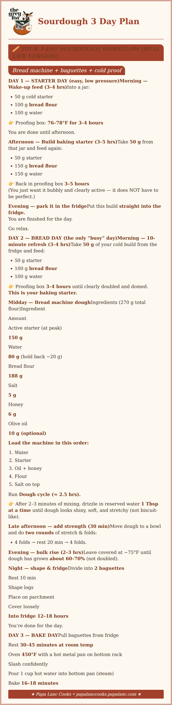

WELCOME
DAY 1 — STARTER DAY (easy, low pressure)Morning — Wake-up feed (3–4 hrs)Into a jar:
👉 Proofing box: 76–78°F for 3–4 hours
You are done until afternoon.
Afternoon — Build baking starter (3–5 hrs)Take 50 g from that jar and feed again:
👉 Back in proofing box 3–5 hours
(You just want it bubbly and clearly active — it does NOT have to be perfect.)
Evening — park it in the fridgePut this build straight into the fridge.
You are finished for the day.
Go relax.
DAY 2 — BREAD DAY (the only “busy” day)Morning — 10-minute refresh (3–4 hrs)Take 50 g of your cold build from the fridge and feed:
👉 Proofing box 3–4 hours until clearly doubled and domed.
This is your baking starter.
Midday — Bread machine doughIngredients (270 g total flour)Ingredient
Amount
Active starter (at peak)
150 g
Water
80 g (hold back ~20 g)
Bread flour
188 g
Salt
5 g
Honey
6 g
Olive oil
10 g (optional)
Load the machine in this order:
Run Dough cycle (≈ 2.5 hrs).
👉 After 2–3 minutes of mixing, drizzle in reserved water 1 Tbsp at a time until dough looks shiny, soft, and stretchy (not biscuit-like).
Late afternoon — add strength (30 min)Move dough to a bowl and do two rounds of stretch & folds:
Evening — bulk rise (2–3 hrs)Leave covered at ~75°F until dough has grown about 60–70% (not doubled).
Night — shape & fridgeDivide into 2 baguettes
Rest 10 min
Shape logs
Place on parchment
Cover loosely
Into fridge 12–18 hours
You’re done for the day.
DAY 3 — BAKE DAYPull baguettes from fridge
Rest 30–45 minutes at room temp
Oven 450°F with a hot metal pan on bottom rack
Slash confidently
Pour 1 cup hot water into bottom pan (steam)
Bake 16–18 minutes

WELCOME
Converted from the original file for viewing — open/download the original to edit it.